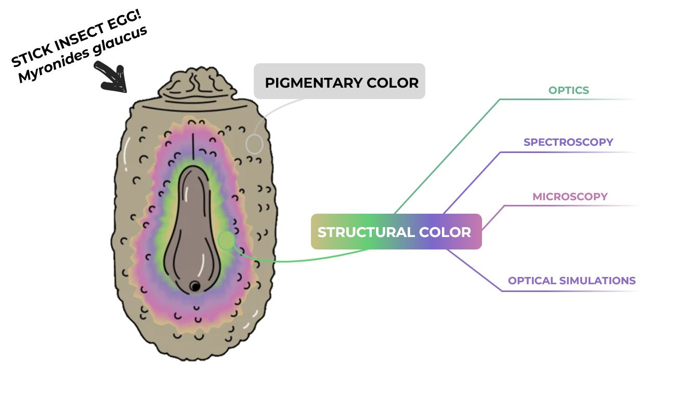
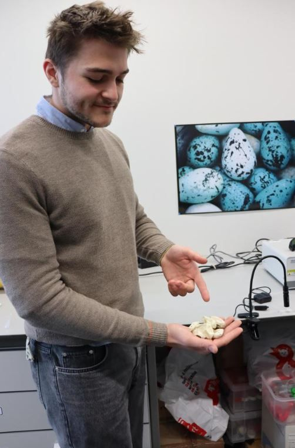
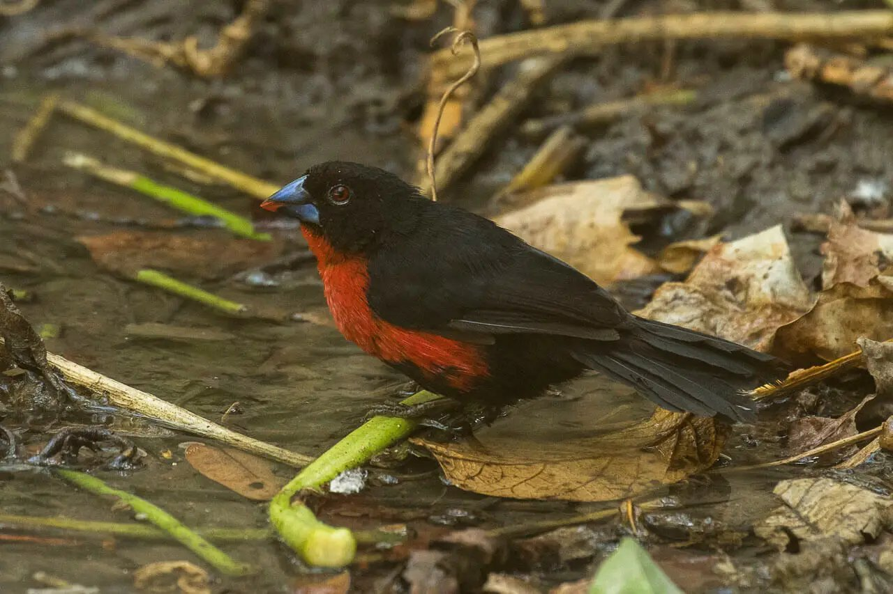

Research
I study functional morphology: how the structure of animal tissues, from the nanoscale up, determines what they do and how they evolved. My work focuses on three areas.
Animal coloration

How do animals produce colour, and why? I study both ways of making colour: pigments such as melanins, and nanostructures that scatter or interfere with light to produce iridescence and brilliant whites. My work spans birds, mammals, insects, springtails and copepods, as well as fossils. It ranges from the molecular basis of parrot colours to fur colour in Mesozoic mammal relatives.
Selected papers
- A molecular mechanism for bright color variation in parrots
Science (2024) - Mesozoic mammaliaforms illuminate the origins of pelage coloration
Science (2025) - Multilayer thin-film produces recurrent evolution of iridescence in mammals
Journal of the Royal Society Interface (2025) - Disrupted melanization reveals a hidden role of microstructures in green plumage coloration
Integrative and Comparative Biology (2026) - A unique hollow melanosome morphology in the hairs of the platypus
Biology Letters (2026)
Adaptation to the environment

How are animal structures shaped by where they live? I study how eggshell structure and chemistry influence eggshell functions in different microhabitats, and how similar eggshell designs evolved independently across animal groups.
Understanding these natural designs can also inspire new materials, such as keratin membranes modelled on reptile eggshells.
Selected papers
- Hydric environment and chemical composition shape non-avian reptile eggshell absorption
Integrative and Comparative Biology (2024) - Convergence in biomineralization patterns across animal eggshells
Faraday Discussions (2025) - Thin-film iridescence in the eggshell of a stick insect (Myronides glaucus)
Physiological Entomology (2025) - Modular design of biomimetic electrospun keratin composites for tunable gaseous sorption inspired by reptile eggshells
Materials Today Bio (2025)
Co-evolution of morphology and behaviour

Image by Francesco Veronesi
Morphology doesn't evolve in isolation. Many of the structures I study are used in signalling and display, such as iridescent bills and brilliant white plumage patches. Eggshells, meanwhile, work together with nesting behaviour. I'm interested in how traits and behaviours evolve together.
Selected papers
- Nanoscale millefeuilles produce iridescent bill ornaments in birds
PNAS Nexus (2024) - How woodcocks produce the most brilliant white plumage patches among the birds
Journal of the Royal Society Interface (2023)
See all my papers on the Publications page.